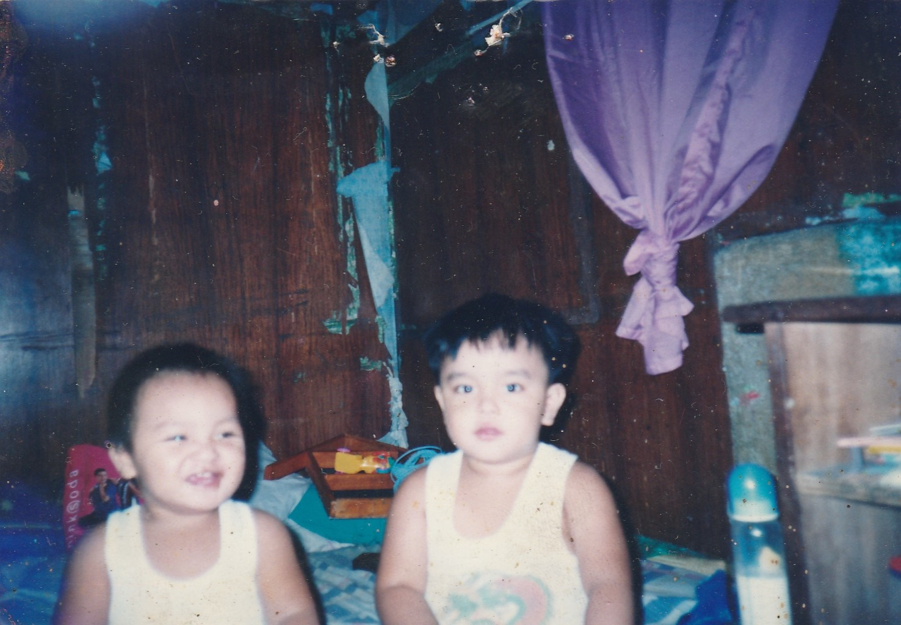
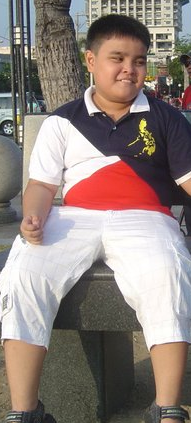
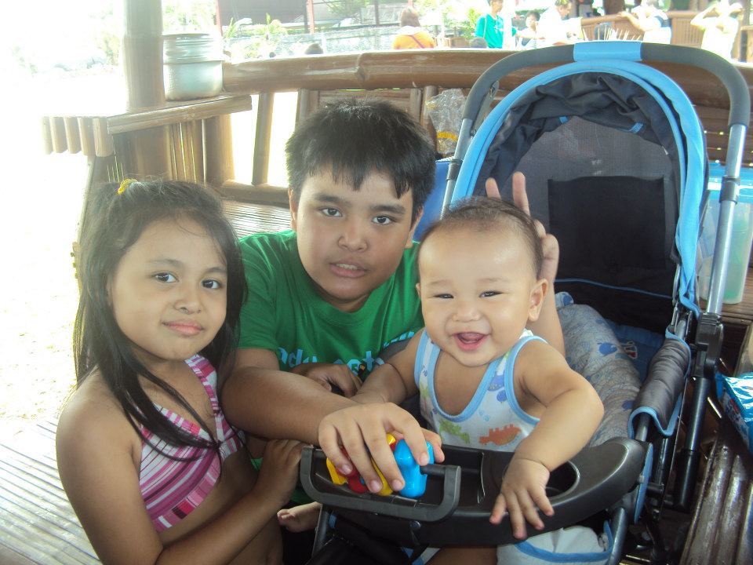
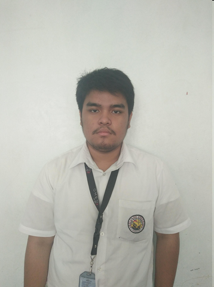
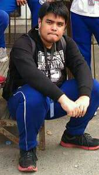
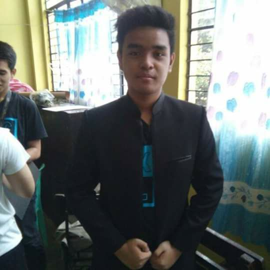
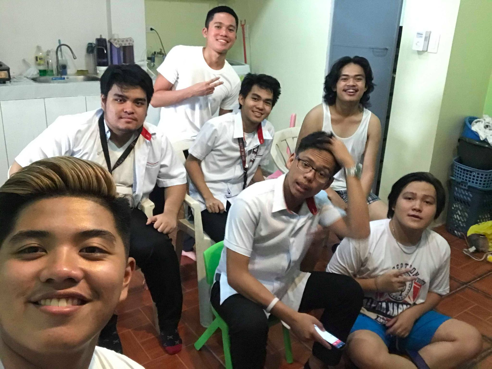
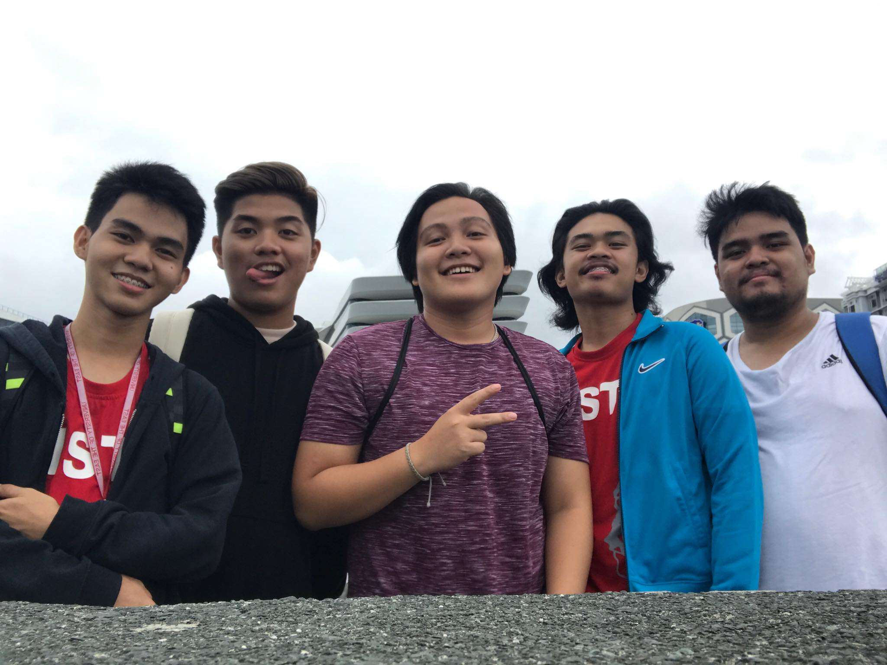
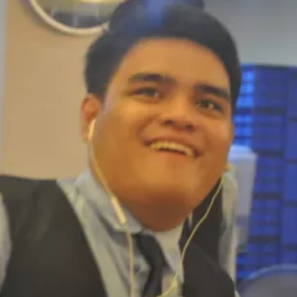

During my childhood years, I was a weird kid.1 When I was a kid, I used to stay inside of the house not playing or socialize with other kids outside of their home.2 So when I was inside of my home, I always play on my Gameboy advance and play some Pokemon, Mario Kart, and some Harry Potter games.3 One day my Dad bought me a Playstation 2 with a game called FIFA.4 It's a Football simulation game that releases every year with a new FIFA game.5 My Dad and I played it all day long with my dad.6 Next one is the Gamecube that was own of my cousin, and we played Mario Kart Double Dash and Super Smash Bros Melee.7 During those time, I communicate so few people during in grade school.8 For me I want to approach to them, to give me some boost of confidence to communicate with others during those time.9 And during my childhood years, I was transferred within around 3 times for I can remember in Grade 2, Grade 3, and Grade 6.10 In grade 2, I was moved to a catholic school that was really new at that time and I have a really great time on that school.11 In 3rd grade, I was transferred again in a different catholic school that was popular here in Tondo.12 In 6th grade, I was transferred in a public school in Quezon City, and it was new for me to be in a new view in a public school that was in private school in all of my childhood days.13 During these times I was a little bit lazy in 6th grade.14 Maybe because that time it was back to zero to get some friends again, or maybe a new city that we were living in my grandparents house.15 So during that time in 5th grade it was really awkward for me to see them that a new transfer student coming from a private school, thinking that we were rich.16 This was the time to find a high school for the next school year.17 There were 2 choices for me, 1st is the manuel roxas high school, and 2nd is the Roces Sr. Science Vocational High School.18 I wanted to go in Roces, because it's really short from my grandparents home to that school and it was one of the most popular school in Quezon City.19 As I take the entracnce exam it was very easible to me to answer them and to get in Roces, and after a few weeks, I saw myself in the board that I pass the entrance exam and I was very happy for me and my parents.20
Go Top
So in my first year in high school I was super excited to be in the high school life.1 After a few months in 1st year, I got dengue in the campus.2 I was hospitalized arouind 3 weeks and found out that I have a hypertension in the age of 13 years old.3 I was shocked and cannot handle my blood pressure becuase of the heat in the campus and the school hours.4 It was around 7:00 AM start of school and ends in 4:00 pm, I cannot handle it, because my blood presure was super annoying for me to learn and concentrate.5 During those time in 1st year, I was leaving around 12pm mainly becasue of my high blood pressure was always high during those days.6 So I mainly got horrific grades that needs to go in summer school to get in shape.7 In my 2nd year, Still having the same issues.8 But my adviser during that time was so very helpful to me to get back in shape and my other teachers also help me. 9 During also in 2nd year, there's a time to choose a vocational course to do that will be stuck in 2nd up to 4th year. 10 I choose Electronics, Computer Systems, and Welding.11 I got welding, so when the first day of vocational classes, I met my classmates and make freinds with them at the first day.12 During those time we were welding scraping metals in the campus and it was very fun to do work inside the campus and learn about welding in general.13 In my 3rd year, it was very horrific time again.14 And also in my 4th year, it was very hard to get back mainly because, theres a change in my environment that I faced and struggled.15 So searching in Senior high school, I choose to go in Arellano University to learn ICT, beacuse of this time I was into in computer hardwares and programming, because it was very interesting on how computers work in hardware and in software.16 In the first day in Senior high, I said to myself that time to change my habit, to learn more and exceed in this course.17 So I did that, I exceed my grades in the course and even compete in programming challenges in the campus and got 2nd place.18 In my 12th grade I was searching to a new university to start in college, my choices were Arellano to stay, UE, or PLM.19 I chose UE mainly because, I want new atmosphere in my college and in PLM I didn't pass my entrance exam.20
Go Top
In my first year college, it was very exciting to be in another environment and get ready to learn.1 During the first day it was very exciting to learn and meet some friends.2 After that things going nicely and it was very refreshing to have a new environment and meet some people already.3 During the morning before classes, I go to a computer shop that is nearby to the school just to watch some youtube videos.4 During the 1st semester in 1st year it was fun and have learn a lot of all the subjects.5 In the next semester, things got a bit hard but it was fine for me.6 During the 2nd semester up to the pandemic it was very okay for me, it was very fun and learn a bit more on java and python.7 During the lockdown, we don't know on what's going to happen to our grades and other activities left for the finals.8 In the lockdown, I was doing learning more on computer hardawre and some new programming languages.9 During this lockdown we know that some of the subjects gave us or grades for the final but there is one subject that we never had and that is Mathematics in the modern world.10 We were trying to contact our professor for our grade, but gladly the head of our professor reported this situation to our professor, and our professor reported the last grade.11 I was shorten by the final grade in my mathematics to make it in the half scholarship by 0.5.12 In the 2nd year of the first semester, I was determined to get into the half scholarship.13 In the first day of classes in this online schooling it was very annoying to settle the meetings and schedule of each subjects.14 The schedule was very rough but it was for the best to learn all of the subjects needed in this course.15 Me and my classmates help each other in our subjects to get great grades for us.16 It was very fun and exhausting on the assingments and the projects that were given to us.17 Like for the finals in our OOP class, my classmates were furious on their IDE, because it was giving them errors.18 So, I helped them their final output by running their output in my IDE, and giving them advices to fix their erros.19 When the grades, I got the half scholarship, I was so pumped to be in the half scholarship and now I need to retain it for the next sem.20
Go Top